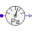
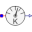
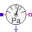
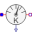
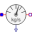
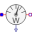

SensorsIdeal sensors to measure port properties |
|
Package Contents
|  |
Absolute pressure sensor |
|  |
Absolute temperature sensor |
|  |
Pressure difference sensor |
|  |
Temperature difference sensor |
|  |
Mass flow sensor |
|
Volume flow sensor |
|
|  |
Enthalpy flow sensor |
Information
This information is part of the Modelica Standard Library maintained by the Modelica Association.
This package contains sensors:
- PressureSensor: absolute pressure
- TemperatureSensor: absolute temperature (Kelvin)
- RelPressureSensor: pressure drop between flowPort_a and flowPort_b
- RelTemperatureSensor: temperature difference between flowPort_a and flowPort_b
- MassFlowSensor: measures mass flow rate
- VolumeFlowSensor: measures volume flow rate
- EnthalpyFlowSensor: measures enthalpy flow rate
Some of the sensors do not need access to medium properties for measuring, but it is necessary to define the medium in the connector (check of connections). Thermodynamic equations are defined in partial models (package BaseClasses). All sensors are considered massless, they do not change mass flow or enthalpy flow.